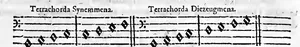

Book III: On Harmonic Proportions & Musical Theory¶
Harmonices Mundi Liber III: Harmonicus, de Ortu Proportionum Harmonicarum, deque Natura & Differentiis Rerum ad Cantum Pertinentium (Linz, 1619)
Outline of Book III¶
Prooemium: Geometric Causes of Harmonic Proportions
Having laid the geometric foundations of constructible (scibiles) figures in Book I and their congruences in Book II, Kepler opens Book III (De Proportionibus Harmonicis) by confronting the ancient Pythagorean and Ptolemaic division of musical intervals. Pure arithmetic ratios—the Pythagorean tetraktys $\{1, 2, 3, 4\}$—cannot explain why $5:4$ (Major Third), $6:5$ (Minor Third), $5:3$, and $8:5$ sing as sweet consonances while $7:6$ or $7:4$ remain harsh. The true principle is geometrical: consonances are born directly from circle divisions effected by knowable regular polygons ($n = 2, 3, 4, 5, 6, 8, 10, 12\dots$).
Chapter I: Origin of Consonances from Constructible Polygons
In Chapter I, Kepler states his Seven Harmonic Axioms: when a circle is divided by an inscribed constructible regular polygon, the resulting arc and its remainder stand in a consonant relation to the whole circle—and to one another—only when the polygon is knowable (scibilis, Book I). Thus the Diameter ($1:2$), Triangle ($1:3, 2:3$), Square ($1:4, 3:4$), Pentagon ($1:5, 2:5, 3:5, 4:5$), Hexagon ($1:6, 5:6$), and Octagon ($1:8, 3:8, 5:8$) generate the exact 5-limit Just-Intonation consonances, while the Heptagon ($7$) is excluded for lack of geometric constructibility.
Chapter II: The Seven Harmonic Sections of a Vibrating String
How does circular polygon division govern a straight monochord string? In Chapter II, Kepler equates the string’s total length $L$ to a circle’s circumference bent straight, and distinguishes seven fundamental harmonic sections: bisection ($1/2$, octave), trisection ($1/3, 2/3$, fifth/twelfth), quadrisection ($1/4, 3/4$, fourth/double-octave), quinquisection ($1/5..4/5$, major/minor thirds and sixths), sexisection ($1/6, 5/6$), octosection ($1/8, 3/8, 5/8$), and decasection ($1/10..9/10$).
Chapter III: Harmonic Means and the Trinity of Concordant Pitches
When a third pitch is interposed inside an octave $1:2$, fifth $2:3$, or fourth $3:4$, what governs true triad harmony? Chapter III analyzes the Arithmetic, Geometric, and Harmonic means (Medietates). Placing the harmonic mean inside the octave ($6:4:3$, or $12:8:6$) yields fifth below and fourth above; dividing the fifth arithmetically ($4:5:6$) splits it into Major Third ($4:5$) and Minor Third ($5:6$), establishing the triadic basis of polyphony.
Chapter IV: Origin and Naming of Melodic (Concinnous) Intervals
Between primary consonances lie melodic steps (concinnitates) needed to connect voices smoothly in scale stepwise motion. Chapter IV derives the Major Tone ($8:9$), Minor Tone ($9:10$), Diatonic Semitone ($15:16$), Chromatic Diesis ($24:25$), Limma ($128:135$), and Syntonic Comma ($80:81$) by subtracting consonances from one another ($2/3 \div 3/4 = 8/9$, $4/5 \div 3/4 = 15/16$), tracing Greek and Latin musical nomenclature (Loca, Voces).
Chapter V: Partition of Consonances into Melodic Step Intervals
Chapter V demonstrates how each primary consonance decomposes into chains of usual melodic steps: the Fourth ($3:4$) contains one major tone, one minor tone, and one semitone ($\frac{8}{9} \cdot \frac{9}{10} \cdot \frac{15}{16} = \frac{3}{4}$); the Fifth ($2:3$) adds one further major tone; and the Octave ($1:2$) contains three major tones, two minor tones, and two diatonic semitones.

Chapter VI: The Soft (Minor) and Hard (Major) Musical Genera
Why are there exactly two fundamental musical modes—Genus Molle (Minor, cantus mollis) and Genus Durum (Major, cantus durus)? Chapter VI traces them straight back to Book I’s dichotomy between expressible polygons (Triangle & Square) and the inexpressible-sided Pentagon: combining bisection with trigonal division gives Genus Molle (integer proportions 12 : 15 : 16 : 18 : 20 : 24), while dual reordering produces Genus Durum (30 : 36 : 40 : 45 : 48 : 60).

Chapter VII: Proportions of the Eight Diatonic Notes of an Octave
Joining two natural fourths (Quartae)—an upper tetrachord (120 : 135 : 144 : 160) and a lower tetrachord (135 : 144 : 160 : 180), separated by the central tone—Kepler constructs the complete eight-note diatonic octave scale (360, 405, 432, 480, 540, 576, 640, 720 in Cantus durus and 360, 405, 432, 480, 540, 600, 640, 720 in Cantus mollis).

Chapter VIII: Thirteen Minimum Steps of the Chromatic-Enharmonic Octave
Combining Cantus durus and Cantus mollis and subdividing major whole tones cleanly to permit transposition without harsh commas, Kepler arrives at thirteen pitches (twelve minimal microtonal intervals per octave) spanning string lengths 1080 to 2160: three Limmas ($128:135$), two Dieses ($24:25$), and seven Diatonic Semitones ($15:16$).
Chapter IX: Staves, Clefs, Note Shapes, and the Musical Scale
In Chapter IX, Kepler turns to practical musical semiography: why the five-line staff (Diagramma), vertical spacing by thirds (Lineae & Spatia), F/C/G clefs (Claves), rhythmic diamond note heads, and alphabetic pitch indices (G, A, b, h, c, d, e, f, g) map naturally onto human vocal perception.

Chapter X: Tetrachords and the Six Solmization Syllables (Ut, Re, Mi, Fa, Sol, La)
Reviewing Greek conjunct (Synemmena) and disjunct (Diezeugmena) tetrachords alongside Guido of Arezzo’s six-syllable hexachord (Ut, re, mi, fa, sol, la), Kepler demonstrates why six true Just-Intonation tetrachord species (I–VI) replace the classical three once the Syntonic distinction between Major Tone ($8:9$) and Minor Tone ($9:10$) is respected.

Chapter XI: Composition of Greater Systems & Mechanical Monochord Corollaries
Chapter XI extends the one-octave tuning across the full multi-octave Great System (Systema magnum). On folio 0149 (Corollaria Arithmetica & Mechanica), Kepler furnishes practical artisan algorithms—dividing a string by repeated factors of $135, 192, 288$, or $48$ and $45$ parts—so instrument builders can fret lutes and harpsichords in pure Just Intonation.
Chapter XII: Adulterate (Comma-Impure) Consonances
Chapter XII exposes the wolf intervals (consonantiae adulterinae) inevitable in any fixed diatonic tuning: specifically the deficient fifth $D$–$a$ ($27:40$ instead of $2:3$) and the sharpened minor third $d$–$f$ ($27:32$ instead of $5:6$), each corrupted by exactly one Syntonic Comma ($80:81$).

Chapter XIII: Naturally Concinnous Melody (Victimae Paschali Laudes)
What makes a melody naturally apt and pleasing to human ears—as opposed to the jarring intervals Kepler overheard from Turkish ambassadors at prayer in Prague? True cantus concinnus anchors itself on consonant pitches ($G, b, c, d, g$) and navigates steps via true 5-limit ratios, exemplified by the Easter sequence Victimae paschali laudes immolent Christiani.

Chapter XIV: The Twelve Musical Modes and the Modal Matrix (Rete Intervallorum)
In Chapter XIV, Kepler derives the twelve authentic and plagal modes (Dorian, Phrygian, Lydian, Mixolydian, Aeolian, Ionian and their Hypo- counterparts) by testing all twelve starting degrees in his square $12\times 12$ permutation lattice (Rete intervallorum, 0157.g1.png) of Semitones ($S$), Diesis ($D$), and Limma ($L$).
Chapter XV: Which Modes Serve Which Emotional Affects
Why does one mode stir solemn grief while another kindles joyous triumph? Chapter XV links musical affect (ethos) directly to the internal triad and semitone geometry of each mode—specifically whether the Major (Genus Durum) or Minor (Genus Molle) third sits above the modal final, and whether the $15:16$ semitone rises or falls against the key center.
Chapter XVI: Figured Counterpoint & the Political Digression on Proportion
Book III culminates in Chapter XVI on polyphonic harmony (Cantus figuratus / counterpoint)—celebrating multi-voice composition (Orlando di Lasso) across Bass, Tenor, Alto, and Soprano—followed by a sweeping Digressio Politica (Appendix, pp. 86–103) comparing Arithmetic, Geometric, and Harmonic proportions in civic justice and governance.